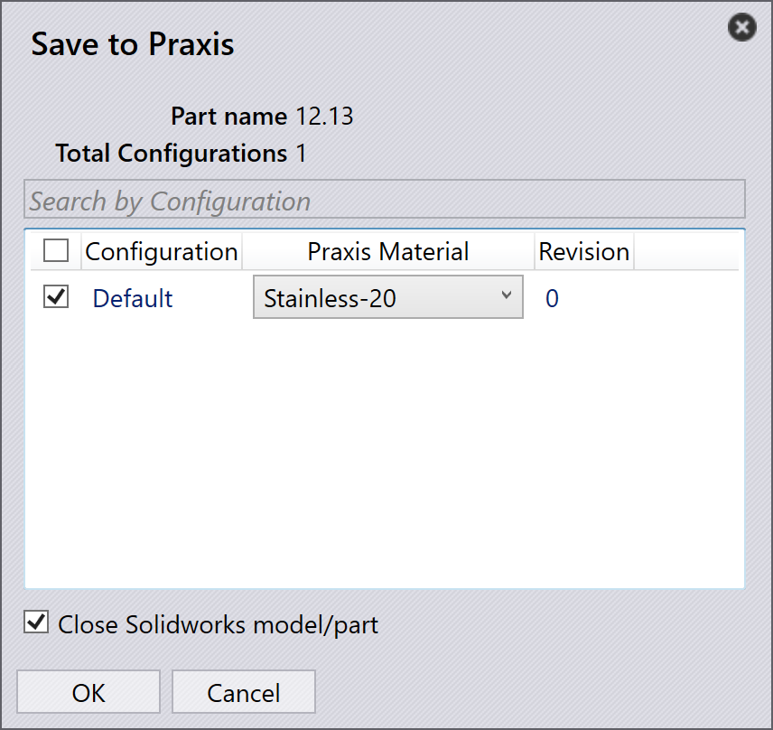

Uložiť diely
Spustite SolidWorks a otvorte diel z plechu (.sldprt).
Potom postupujte podľa týchto krokov:
-
Prepnite na záložku TruSmartCAM v SolidWorks pre prístup k panelu nástrojov TruSmartCAM.
-
Kliknite na Uložiť do Praxis v paneli nástrojov TruSmartCAM.
V dialógovom okne Uložiť do Praxis vyberte príslušný surový materiál TruSmartCAM, potom kliknite na OK pre nahratie a uloženie dielu do knižnice TruSmartCAM dielov.

Diel bude teraz uložený v TruSmartCAM.

TruSmartCAM obsahuje niekoľko vzorových dielov umiestnených v C:\Program
Files\Metamation\ TruSmartCAM \Samples\Parts. Môžete ich použiť na testovacie účely, ak
je to potrebné.
|
Automatické rozlíšenie materiálu
Táto funkcia automaticky konvertuje materiály SolidWorks a hodnoty hrúbky dielu na zodpovedajúce surové materiály TruSmartCAM počas nahrávania.
Konfigurácia mapovania materiálu:
-
Kliknite na Možnosti v paneli nástrojov TruSmartCAM pre otvorenie dialógového okna Možnosti.

-
Prejdite na stránku Mapovanie materiálov.
-
V ľavom paneli vyberte materiál SolidWorks.
-
V pravom paneli vyberte zodpovedajúci materiál TruSmartCAM.
-
Kliknite na Mapovať pre vytvorenie mapovania.
-
Namapovaný pár sa zobrazí v zozname mapovania v dolnej časti.
-
-
Ak chcete odstrániť mapovanie, vyberte ho a kliknite na Nemapovať.
Nastavenie tolerancie hrúbky
Hodnota tolerancie hrúbky definuje rozsah tolerancie, v rámci ktorého TruSmartCAM porovnáva hrúbku modelu plechu z SolidWorks s existujúcou hrúbkou surového materiálu v databáze TruSmartCAM. Kompenzuje malé odchýlky v hrúbke modelu spôsobené zaokrúhľovaním návrhu, konverziou jednotiek atď…
Keď hrúbka dielu SolidWorks presne nezodpovedá materiálu v TruSmartCAM, hodnota tolerancie zabezpečí, že najbližší dostupný materiál bude vybraný automaticky.
S nominálnym 2,0 mm materiálom a hodnotou tolerancie 0,05 mm:
-
TruSmartCAM prijíma akúkoľvek hrúbku modelu SolidWorks medzi 1,95 mm a 2,05 mm ako platnú zhodu.
-
Odchýlky mimo tento rozsah spustia výzvu na manuálny výber materiálu počas nahrávania dielu.
Zobrazenie alebo úprava hodnoty tolerancie:
-
Kliknite na Možnosti v paneli nástrojov TruSmartCAM a potom prejdite na Rôzne nastavenia pre zobrazenie hodnoty tolerancie, teraz kliknite na Uložiť do Praxis.

-
V dialógovom okne Uložiť do Praxis kliknite na OK, diel bude uložený do TruSmartCAM.

Čítanie vlastných vlastností dielu
Toto nastavenie umožňuje TruSmartCAM automaticky čítať vlastné informácie o diele—ako Material, Revision a ďalšie používateľom definované atribúty—priamo zo súborov dielov SolidWorks.
Nastavenie:
-
Kliknite na Možnosti v paneli nástrojov TruSmartCAM pre otvorenie dialógového okna Možnosti a potom prejdite na Vlastné polia.

-
Použite tlačidlá Mapovať a Nemapovať na prepojenie požadovaných polí TruSmartCAM s príslušnými poľami SolidWorks Custom alebo Configuration.
| Zobrazené hodnoty sú načítané z aktuálne aktívneho dielu SolidWorks. |
-
Po dokončení mapovania budú vybrané vlastné vlastnosti automaticky čítané zo SolidWorks vždy, keď sú diely importované alebo aktualizované v TruSmartCAM, teraz kliknite na Uložiť do Praxis.
| Mapovania definované tu sú uložené v repozitári TruSmartCAM a automaticky synchronizované naprieč všetkými inštaláciami TruSmartCAM SolidWorks v rámci siete. |
-
V dialógovom okne Uložiť do Praxis kliknite na OK, diel bude uložený do TruSmartCAM.
